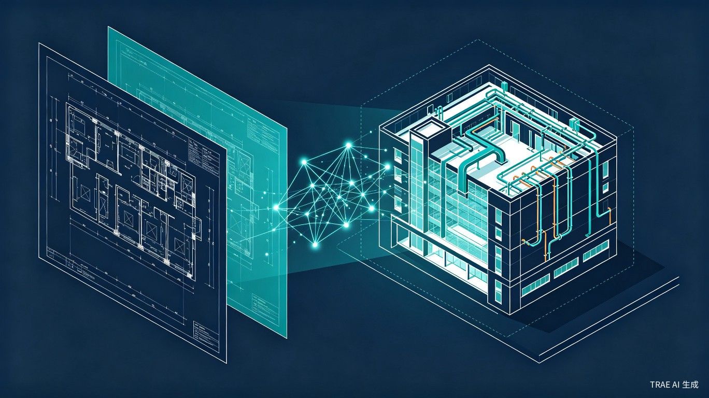

上传图纸，AI 自动识别构件、生成三维 BIM 模型、优化管线排布，全程内嵌中国规范。图纸进去，模型出来。
UjaBIM 是一个 AI 驱动的 BIM 智能翻模平台，面向国内 BIM 翻模从业者和小型工作室。核心功能是将二维 CAD 图纸或扫描 PDF 蓝图自动转化为三维 BIM 模型，并提供 AI 管线综合优化和交互式构件问答能力。
BIM 翻模——把二维 CAD 图纸转化为三维 BIM 模型——是建筑行业里一个高耗时、低技术含量、但又不得不做的环节。设计师已经用 CAD 画好了图纸，BIM 从业者要照着图纸在 Revit 里重新建一遍三维模型。一个中等规模的项目，翻模周期动辄数周甚至数月，管线综合排布完全依赖人工经验，碰撞遗漏导致返工是常态。
UjaBIM 用 AI 把这个"逆向重画"的过程自动化，把翻模效率从周级压缩到天级甚至小时级。
第一，行业有真实痛点。翻模从业者每天都在做重复劳动，行业里一直没有真正好用的 AI 工具来解决它。
第二，AI 技术刚好到了可用阶段。深度学习在图像识别、语义分割、三维重建方面的能力已经成熟到可以处理工程图纸。品茗 HiBIM 在 2025 年推出了 AI 翻模功能，证明了这条路走得通，但只覆盖了土建，机电管线完全没碰，而且面向中大型企业。
第三，有一个被忽视的用户群体。国内大量底层 BIM 翻模从业者和 1–5 人的小型工作室，他们才是翻模的主力军，但市面上几乎所有 BIM 工具都面向中大型企业定价和设计。
UjaBIM 包含四个核心功能模块：
上传扫描 PDF 蓝图或矢量 CAD，AI 自动透视校正、图元识别，生成可编辑的 CAD 文件。
AI 自动将 CAD 图纸转换为三维 BIM 模型（IFC + Revit 格式），支持手动修正构件参数。
AI 自动排布机电管线，内嵌中国通用规范（GB 50015、GB 50243 等），支持成本优先/净高优先/均衡三种模式。
在三维模型中点击任意构件，AI 返回属性信息，支持自然语言提问。
| 维度 | 描述 |
|---|---|
| 核心用户 | 国内底层 BIM 翻模从业者、承接翻模业务的个人工作室（1–5 人） |
| 扩展用户 | 中小型设计院 BIM 部门、施工总承包方 BIM 团队 |
| 技术水平 | 熟练使用 Revit / CAD，AI 工具使用经验有限 |
| 使用频率 | 高频——日常工作即为翻模，日均处理图纸 20–50 张 |
| 决策权 | 个人或工作室负责人自主决策，采购周期短 |
| 付费意愿 | 按项目或按月订阅付费，对 ROI 敏感 |
甲方给了扫描 PDF 蓝图（非矢量 CAD），以前要人工在 Revit 里逐个构件建模，单层平面图 1–2 天。现在上传 PDF → AI 透视校正 → 识别 → 生成 BIM 模型，几小时搞定。
收到完整项目的 CAD 图纸包（建筑、结构、机电各专业），上传 DWG → AI 按图层自动识别 → 生成 BIM 模型 → 点击构件查看属性、修正参数。
翻模完成后做管线综合，选择优化模式 → AI 自动排布 + 规范校验 → 输出优化方案和碰撞报告。
| 痛点 | 具体表现 |
|---|---|
| 建模效率极低 | 大型项目翻模耗时数周甚至数月，半自动工具仍需大量人工干预 |
| 图元识别精度不足 | 图纸线条密集、构件遮挡、标注重叠，传统技术识别精度不够 |
| 数据格式不统一 | 不同地区、不同单位的制图习惯差异大，通用性差 |
| 管线综合依赖人工 | 排布优化靠经验，碰撞遗漏多，返工率高 |
| 翻模价值被低估 | 花大力气建模但主要为了出图，模型数据没进入业务协同 |
| 工具面向大企业 | 现有 AI 翻模工具面向中大型企业，小型工作室用不上或用不起 |
flowchart LR
A[上传图纸
PDF/DWG/DXF] --> B{图纸类型}
B -->|扫描PDF| C[透视校正]
B -->|矢量CAD| D[图层解析]
C --> E[AI 图元识别]
D --> E
E --> F[生成可编辑 CAD]
F --> G[AI 智能建模]
G --> H[BIM 模型
IFC / Revit]
H --> I{用户操作}
I -->|修改构件| J[保存修改数据
回流 AI 训练]
I -->|管线优化| K[选择优化模式]
K --> L[AI 管线排布
内嵌规范校验]
L --> M[输出优化方案
+ 碰撞报告]
I -->|构件问答| N[点击构件
AI 返回属性]
J --> G
翻模效率提升 50–70%，原来数周的工作压缩到几天甚至几小时。管线优化从人工逐根排查变成 AI 自动排布 + 碰撞检测，返工率大幅下降。从业者从重复建模的"画图工人"转变为审核 AI 结果的"模型审核员"。
翻模从业者按项目计费，效率提升直接等于接单量增加、收入增加。UjaBIM 的数据飞轮机制——用户修正 AI 结果的数据回流训练——让用的人越多 AI 越准，形成竞品难以复制的准确率壁垒。在国产替代政策窗口期，面向被头部厂商忽视的小工作室群体，是一个低成本切入的差异化市场。
聚焦图纸解析 + 基础建模。支持矢量 CAD 上传 → AI 识别 → 自动生成 BIM 模型（IFC 格式）。验证 AI 识别准确率 ≥75%，获取首批种子用户反馈。
补全完整翻模工作流：扫描 PDF 透视校正、Revit 格式导出、管线优化（三种模式）、构件问答、数据飞轮。识别准确率 ≥90%，管线碰撞消除率 ≥95%。
正向设计模块——根据土地信息和建筑类型生成多套符合规范的 BIM 方案。扩展用户至中小型设计院。探索算量、造价等下游功能合作。
| 竞品 | 定位 | AI 能力 | 不足 |
|---|---|---|---|
| 品茗 HiBIM | AI 翻模工具 | AI 一键翻模（土建） | 聚焦土建，机电弱；面向大企业 |
| 广联达数维 | 正向设计平台 | AecGPT 大模型 | 不服务翻模场景；价格高 |
| PKPM Agent | 结构设计智能体 | AI 控制建模 | 聚焦结构，不覆盖翻模和机电 |
| 蓝燕云 | 施工图转三维 | 一键 DWG 转 IFC | 识别精度有限，无管线优化 |
| UjaBIM | 翻模从业者平台 | 图纸识别+建模+管线优化+问答 | 早期产品，准确率待验证 |
UjaBIM 的差异化在于：扫描 PDF 透视校正几乎无人覆盖；数据飞轮机制尚未有竞品建立；管线优化内嵌中国规范的智能化方案稀缺；面向底层翻模从业者的定位独特。